Installation
1. Apply super high temperature grease, part No. 08789-0002 or equivalent to extension shaft spines, then install secondary spring in differential side of extension shaft 0.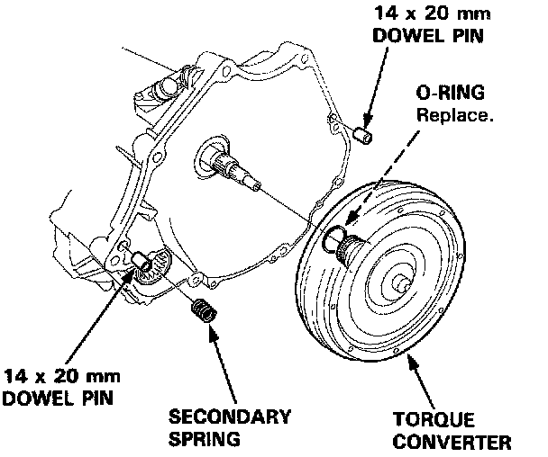
2. With transaxle on jack, raise to engine level, install bottom center housing mounting bolt and shim.
3. Attach torque converter to drive plate, then rotate crankshaft and torque six bolts in two passes to 20 ft. lbs. in a crisscross pattern. Ensure crankshaft rotates freely after tightening last bolt.
4. Install torque converter covers.
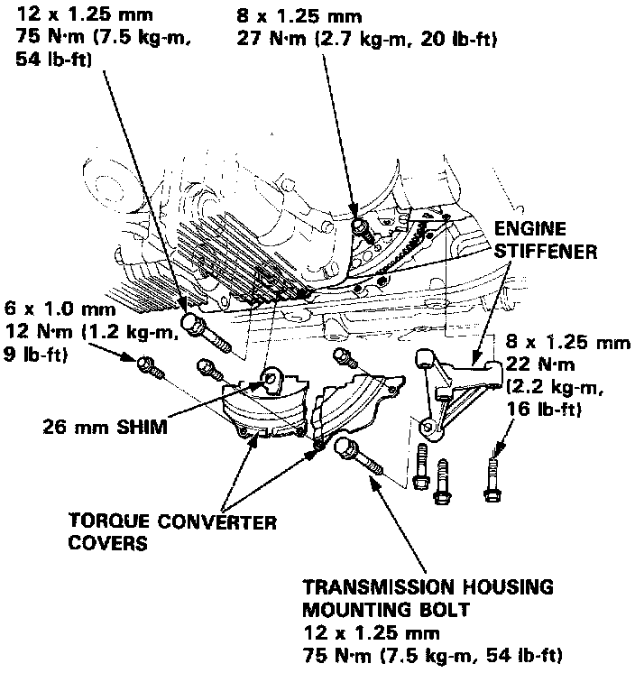
5. Loosely install engine stiffener engine bolts.
6. Install three transaxle housing mounting bolts
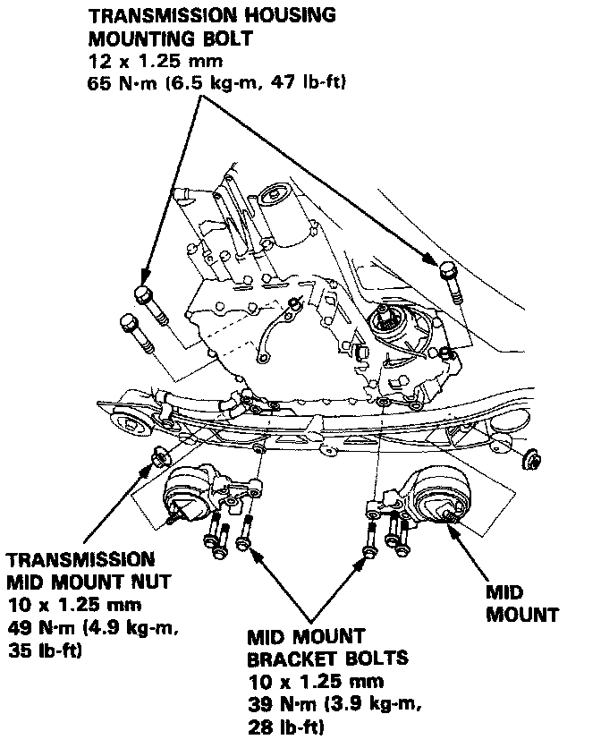
7. Install mid mounts.
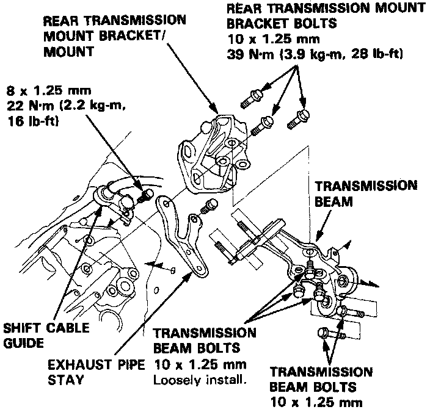
8. Remove jack, then loosely install transaxle beam to rear mount with three bolts.
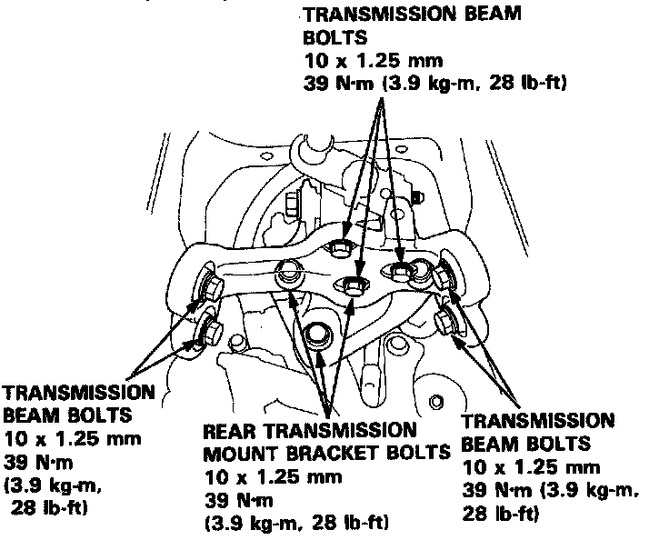
9. Install mount/beam assembly on rear cover and torque, in order, four beam bolts, three rear mount bolts and three loosely installed beam bolts to 28 ft. lbs., then install shift cable guide and torque bolt to 16 ft. lbs.
10. Install differential and shim.
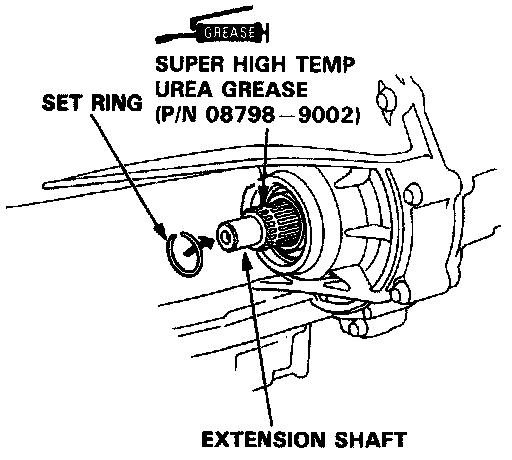
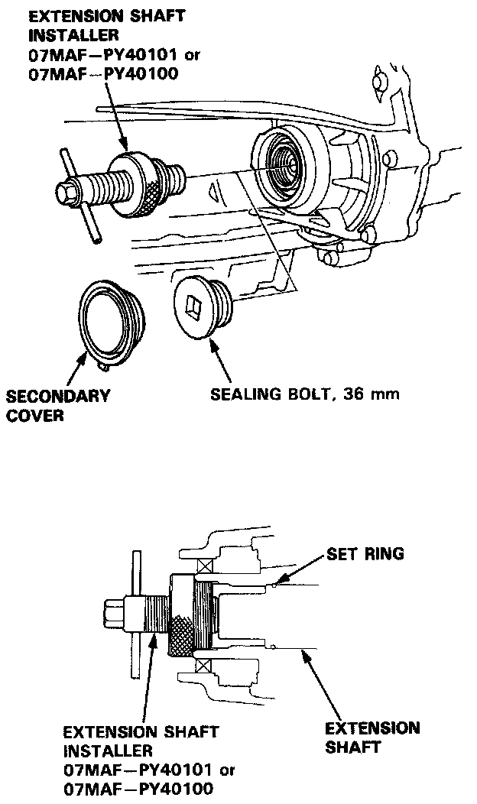
11. Install new set ring in extension shaft and install shaft using special extension shaft installer tool No. 07MAF-PY40101 or 07MAF-PY40100, or equivalents. Ensure shaft locks in secondary gear shaft.
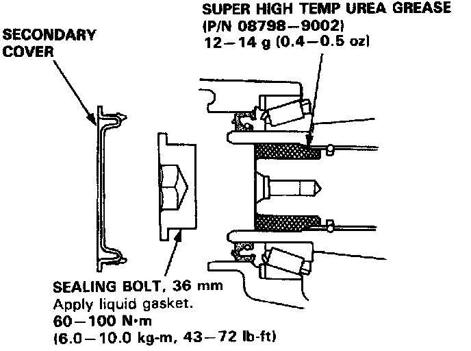
12. Fill opening between secondary and extension shafts with super high temperature grease No. 08798-0002 or equivalent, apply liquid gasket No. 08718-0001 to sealing bolt threads and install sealing bolt, then install secondary cover.
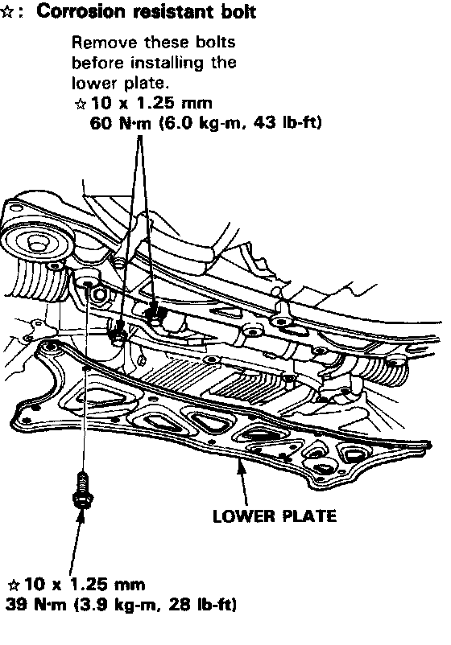
13. Remove steering gearbox bolts, then install lower plate.
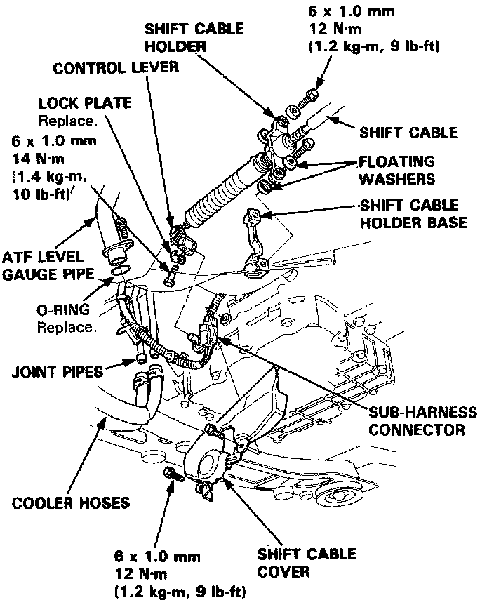
14. Install control lever on shaft with new lock plate, then bend lock plate.
15. Install shift cable holder on base and cable cover.
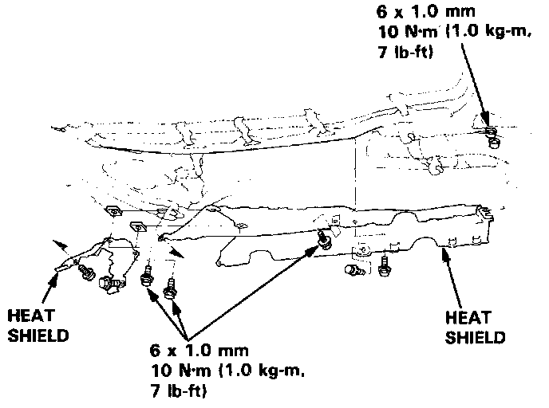
16. Connect ATF cooler hoses to joint pipes, then shift control solenoid valve/linear solenoid connect to transaxle subharness connector and subharness connector to shift cable cover.
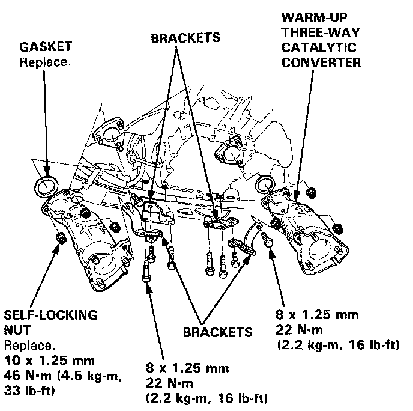
17. Install ATF level gauge pipe with new O-ring to torque converter housing, then heat shields.
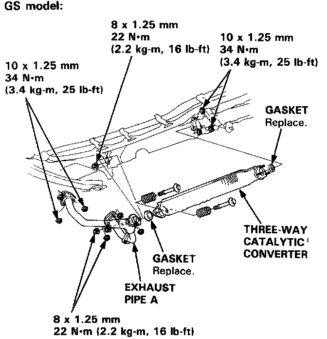
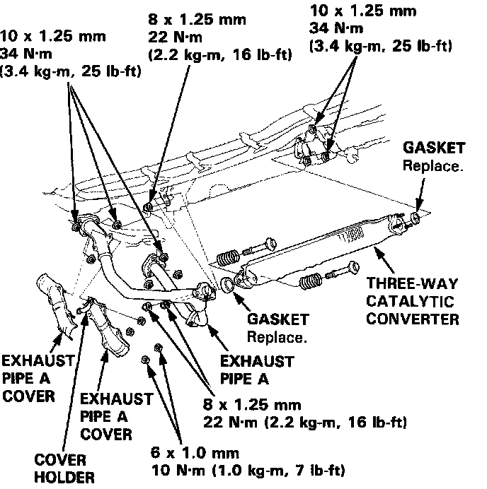
18. Install three-way catalytic converter.
19. Install transmission housing mounting bolts, then ATF level gauge pipe stay bolts 0.
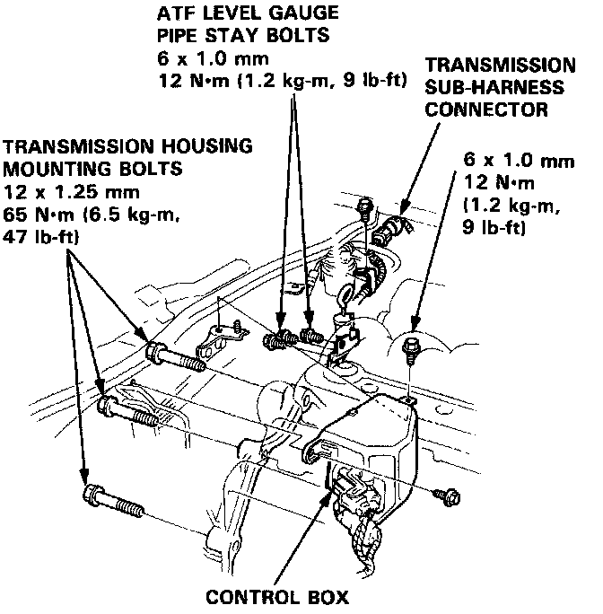
20. Install subharness connector and control box.
21. Install strut bar.
22. On models equipped with radio coded theft protection system, refer to Vehicle Damage Warnings for system disarming and arming procedures. On models equipped with airbag system, refer to Technician Safety Information for system disarming and arming procedures.